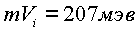
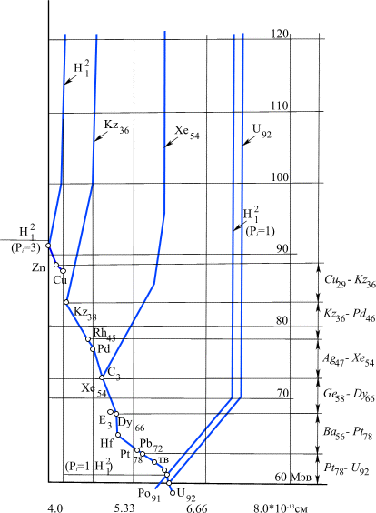

|
В. И. ЕЛИСЕЕВ ВВЕДЕНИЕ В МЕТОДЫ ТЕОРИИ
ФУНКЦИЙ ПРОСТРАНСТВЕННОГО КОМПЛЕКСНОГО ПЕРЕМЕННОГО |
|
5.5.2. Построение диаграммы состояния ядер элементов периодической таблицы Д.И. Менделеева.
Запишем формулу (5.27) в виде:
(5.28.) |
Выделенная величина
Evi есть функция радиуса ядра Rя, массы обменного кванта - на один нуклон в ядре атома, Величина Evi не зависит от заряда ядра - Zi массового числа Ai и переодичности Pi.В координатах
mVi - Ri величина Eсв определяет точки, в которых каждое конкретное ядро имеет e -туннели с одинаковой величиной насыщения обменной массой mVi.Решим формулу (5.27) относительно радиуса ядра -
Ri.(5.29.) |
Для ядер периодической таблицы при
Ei=E0, Pi=P0 минимальный радиус ядер определяется условием, когда подкоренное выражение равно нулю:Решим уравнение относительно массы обменного
кванта(5.30.) |
В этом случае ядро будет иметь радиус
 . . |
(5.31.) |
Зависимости (5
.30), (5.31) определяют точку на диаграмме, которую принимаем за нулевую точку состояния атомного ядра.Состояние атомного ядра изменяется, если ядро
переходит в систему с другим значением Pi. Ядро будет иметь исходную энергию связи – E0, однако другой обменный квант mVi и следовательно другой радиус ядра – Ri.Изменение величины периодичности
Pi в формулах 5.28-5.31 при постоянных E0, Z, A на диаграмме mVi - Ri /рис. 55, 56, 57/ даёт кривую предельных размеров радиусов ядер в периодических системах с Pi-Var.Формулы (5.30
), (5.31) определяют положение ядра атома при изменении Pi относительно P0:а
) если ядро имеет , ,б
) если то , .Состояния с
являются возбуждёнными состояниями. Кривая возбуждённых состояний конкретных ядер совпадает с кривой предельных радиусов невозбуждённых состояний ядер с Zi и Ai при .Таким образом, начальные состояния и возбуждённые располагаются на одной кривой.
На рис
. 55,56,57 представлены исходные состояния ядер периодической таблицы Д,И. Менделеева, отвечающие .Отметим основные особенности диаграммы:
а
) Открывает диаграмму предельной кривой ядро атома гелия с максимальным по величине значением обменного кванта  и минимальным радиусом .б
) Расположение ядер изотопов гелия , лития - , дейтерия - , трития - взаимно перекрывают друг друга.Рис 55. Диаграмма потенциальных ям ядер элементов от гелия до неона. Диаграмма характеризуется большим интервалом изменения значения обменного кванта и радиуса ядра.

Рис 56. Диаграмма потенциальных ям ядер по периодам таблицы элементов Д.И. Менделеева. Даны интервалы изменения величины обменного кванта и радиуса атомного ядра.
Рис 57. Диаграмма возбуждённых состояний ядер элементов, участвующих в реакциях синтеза.
/ так ядро атома дейтерия
имеет радиус больше радиуса ядер изотопов лития /.с) Первый период таблицы элементов / от ядра гелия
до ядер изотопов неона / занимает верхнюю часть диаграммы, так что для ядер этого периода характерны большая величина обменных квантов и малые радиусы ядер:, .
Для первого периода характерен большой интервал изменения значений обменного кванта и радиуса атомного ядра.
д
) Интервалы изменения обменных квантов / их значений/ к концу периодической таблицы падают, падают их абсолютные значения. Соответственно растут значения радиусов ядер и падают интервалы их изменения по периодам. Так начиная с ядер изотопов криптона до конца периодической таблицы величина обменного кванта изменяется от значениядо
е) Величина обменного кванта на диаграмме предельных состояний падает с 207 Мэв до 57 Мэв то есть примерно в 3.2 раза и соответственно обратно пропорционально увеличивается радиус атомного ядра.
Замечание. Вопрос о положении на диаграмме протона и нейтрона требует особого рассмотрения.
В соответствии с формулой (5.29), если увеличить величину обменного кванта
mVi на один нуклон , оставив постоянным E0 в формуле (5.30), то радиус атомного ядра будет увеличиваться. На рис. 55, 56, 57 представлены линии максимального расширения радиуса атомного ядра для элементовзакрывающих ряды периодической таблицы. Эти линии будем называть линиями предельного (по радиусу ) возбуждения атомного ядра.
Обе линии: предельного сжатия и предельного расширения ядра атома элемента образуют потенциальную яму, определяющую на диаграмме
mVi - Ri область существования конкретного атомного ядра.Линии предельного сжатия и предельного расширения имеют
особую точку при значениях: Ei=E0, Pi=P0 в которой величина обменного кванта mV0 имеет для конкретного атомного ядра своё минимальное значение.Характер линии предельного расширения показывает, что
с начало при небольшом росте величины обменного кванта происходит резкое увеличение исходного радиуса Rя, а в дальнейшем увеличение происходит медленнее даже при значительном росте этой величины.С увеличением заряда
Z ядра область его существования растёт по площади на диаграмме / рис 55,56, 57 /. Для ядер первого периода этот порядок нарушен, так что ядро с меньшим значением - Zi может перекрывать область существования ядра с большим значением Z. Область существования изотопов первого периода в значительной степени определяется массовым числом А, в то время как для ядер тяжёлых элементов массовое число играет роль только в пределах одного заряда.Мини оглавление:
[0], [1.1.1, 1.1.2, 1.1.3, 1.1.4, 1.1.5, 1.1.6, 1.1.7, 1.1.8, 1.2, 1.2.1, 1.2.2, 1.2.2.a, 1.2.2.b, 1.2.2.c, 1.2.2.d, 1.2.2.e, 1.2.2.f, 1.2.2.g, 1.2.2.h, 1.2.3, 1.3.1, 1.3.2, 1.3.3, 1.3.4, 1.3.5, 1.3.6, 1.4.1, 1.4.2, 1.5, 1.6, 1.7.1, 1.7.2, 1.7.3.1, 1.7.3.2, 1.7.3.3, 1.7.4.1, 1.7.4.2, 1.8.1], [2.1, 2.2],[3.1, 3.2, 3.3, 3.4.1, 3.4.2, 3.4.3, 3.4.4, 3.4.5],[4.1, 4.2, 4.3, 4.4],[5.1, 5.1.Рис.52, 5.2, 5.3, 5.4, 5.4.Т1, 5.4.Т2, 5.4.Т3, 5.5.1, 5.5.2, 5.5.3, 5.5.4],[6.1.1, 6.1.2, 6.2.1, 6.2.2, 6.2.3, 6.2.4, 6.2.5, 6.3, 6.4.1, 6.4.2, 6.5.1, 6.5.2],[7.1, 7.2, 7.3, 7.4, 7.5, 7.6, 7.7.1, 7.7.2, 7.8.1, 7.8.2, 7.8.3, 7.9],[8.1, 8.2.1, 8.2.2, 8.3, 8.4, 8.5, 8.6, 8.6.T1, 8.7, 8.8.1, 8.8.2, 8.8.3, 8.9.1, 8.9.2, 8.9.3, 8.10, 8.10.T2, 8.10.T3],[9.1, 9.2, 9.3, Рис.88, 89, 90, 91, 92, 93, 94, 95, 96, 97, 98, 99, 100],[10.1, 10.2, 10.3, 10.4, 10.5, 10.6, 10.7, 10.8, 10.9, 10.10, 10.11, 10.12, 10.13, 10.14, 10.15.1, 10.15.2, 10.16.1, 10.16.2, 10.17, 10.18],[11]
Размещенный материал является электронной версией книги: © В.И.Елисеев, "Введение в методы теории функций пространственного комплексного переменного", изданной Центром научно-технического творчества молодежи Алгоритм. - М.:, НИАТ. - 1990. Шифр Д7-90/83308. в каталоге Государственной публичной научно-технической библиотеки. Сайт действует с 10 августа 1998.
E-mail: mathsru@gmail.com